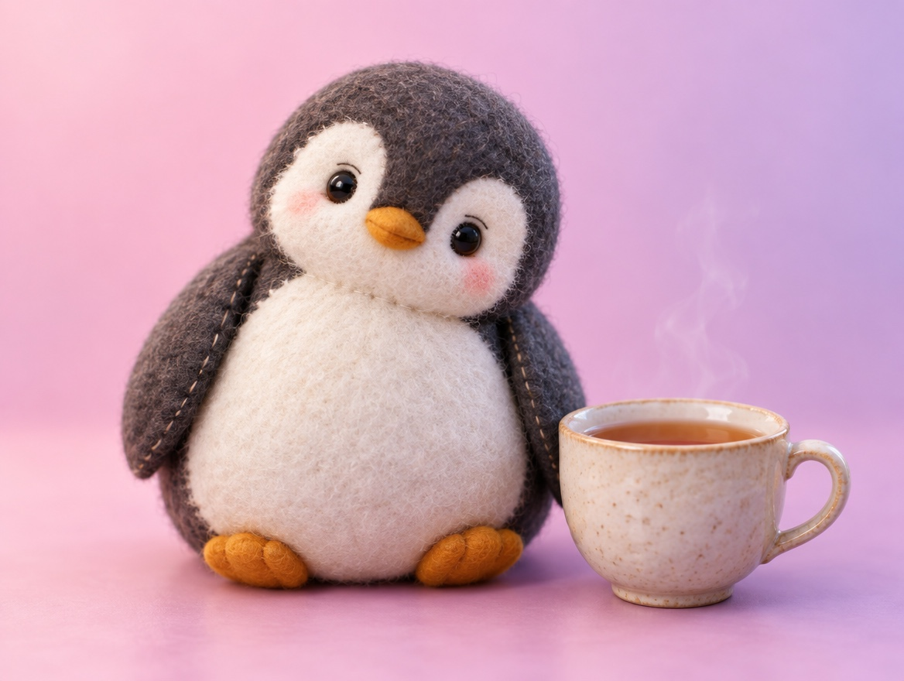

📝 DRAFT · 下書き — まだ本番に出していません · 下書き一覧
🐧 EVERYDAY LIFE⚡ 14 SEC
When a friend shares a worry, listen with empathy first, then advice 💗

They Know
It seems people who talk about a worry usually have the answer already.
Let It Out
What they really want is to let it out and feel better.
Say This
So say "That was hard," not "That happens a lot."
⚡ TRY IT
Put the replies in order
"I had a really bad day today…"
"Thank you. I feel better now. Actually, I already know what to do!"
"…I just wanted you to listen."
1
2
3
😌 Feel-better meter
Tap the replies in the order you would say them.
🥇 Perfect order! Empathy → OK → advice.
😑 Advice came too early. Your friend wanted to let it out first.
🤏 Close! Try this order: empathy → OK → advice.
The Order
The order is empathy, OK, then advice.
📚 I learned this from the Japanese blog "Panda no Ondo".